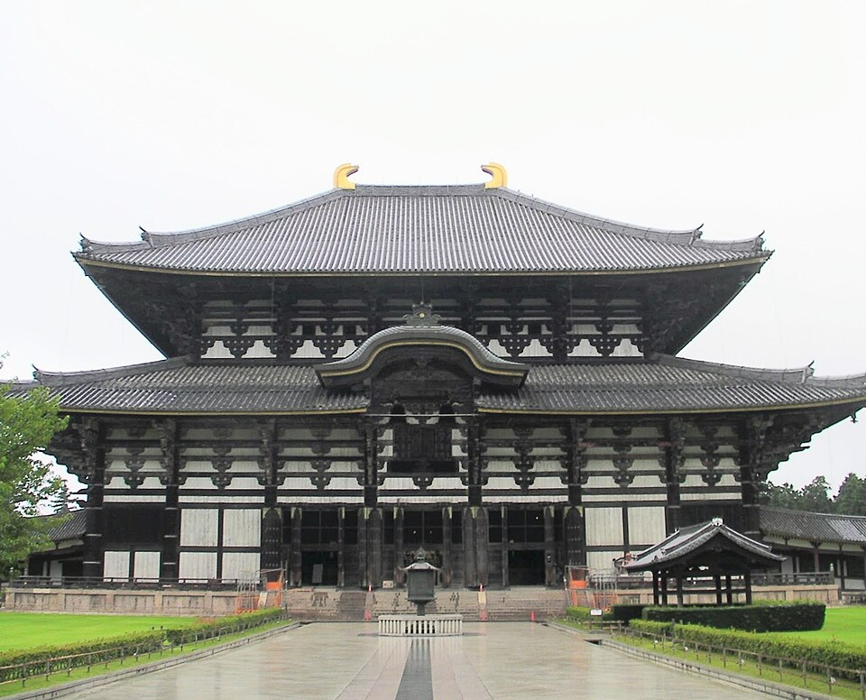
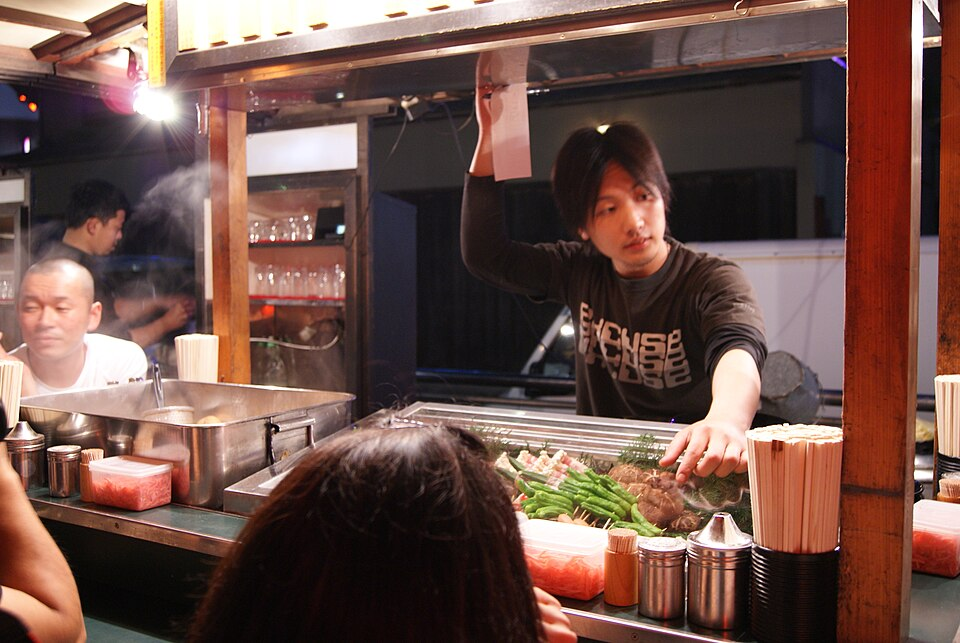
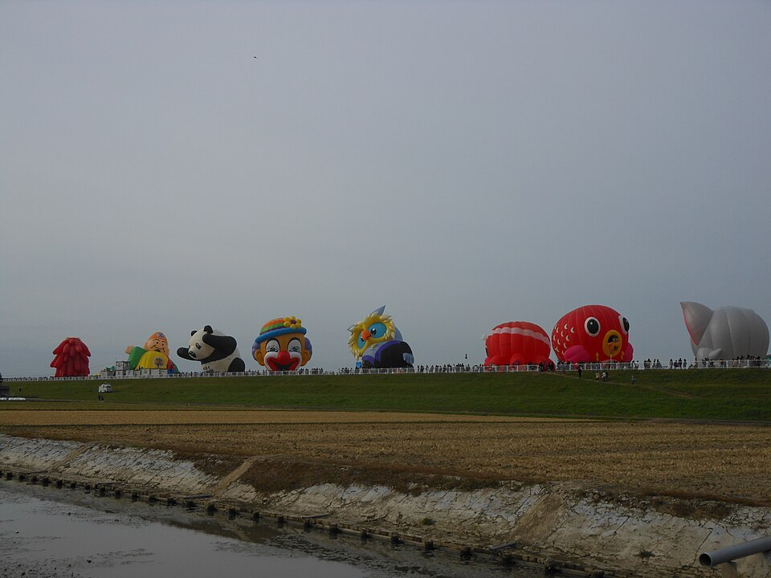

Как закончить поездку
Коротко на твои вопросы
Hiroshima далеко? Нет. Из Osaka 1 ч 25 синкансэном без пересадок (Shin-Osaka, поезда каждые 10-15 минут), от центра Osaka до Shin-Osaka ещё ~15 мин. Miyajima от Hiroshima: 27 мин поездом и 10 мин паромом.
Долины вулканов. Лучшее по пути - Beppu: семь «адов» и гейзер, полдня. Из Osaka 3 ч 34, из Hiroshima 2 ч 22. Aso сейчас не вариант: уровень опасности 2, к кратеру не пускают, а 16.10 выброс газа вырос втрое (бюллетень JMA). Unzen в стороне от маршрута.
Fukuoka - есть ли смысл? Для тебя нет. Это город еды (yatai, рамен), после Osaka нового мало. И рейсы оттуда хуже: через Seoul вылет в 08:35 и перелёт 14 ч 55, через Shanghai 13 ч 20 с ночной пересадкой. Из Osaka вечерний рейс через Dubai, самый длинный перелёт 11 ч 20. Fukuoka стоит выбрать только ради шаров в Saga 30.10 (взлёт около 7 утра).
Домой на следующей неделе. Вариант 1 укладывается: вылет чт 29.10 вечером, в Barcelona пт 30.10, до Lisbon десять дней.
Сплошная линия - поезд (через Kokura, где пересадка), пунктир - поездка на день и обратно.
Сравнение
| 1. Петля, домой из Osaka | 2. Через Fukuoka | 3. Коротко | |
|---|---|---|---|
| Вылет | чт 29.10, 23:10, Kansai | сб 31.10, Fukuoka | вт 27.10, 23:10, Kansai |
| В Barcelona | пт 30.10 | сб 31.10 вечером или вс 01.11 | ср 28.10 |
| Дней дома до Lisbon (9.11) | ~10 | ~8 | ~12 |
| Ночи | Osaka 3 · Beppu 2 · Hiroshima 2 | Osaka 3 · Hiroshima 2 · Beppu 2 · Fukuoka 2 | Osaka 5 |
| Смен отеля после Kyoto | 3 | 4 | 1 |
| «Ады» Beppu | ✅ вс-пн, сухо | ✅ вт-ср, местами дождь | ❌ |
| Miyajima | ср 28: будни, сухо | пн 26: будни, местами дождь | пн 26, за день из Osaka |
| В день вылета до аэропорта | 2 ч 40 (или через Himeji) | 14 мин, но рейс в 08:35 или ночная пересадка | 43 мин |
| Самый длинный перелёт | 11 ч 20 (до Dubai) | 14 ч 55 (Seoul) или 13 ч 20 (Shanghai) | 11 ч 20 (до Dubai) |
1. Петля, домой из Osaka (рекомендую)
Погода: Open-Meteo, 19.10 16:27. Дальше 7 дней прогноз слабый, перед каждым переездом обновлю.



| День | Где и что |
|---|---|
| чт 22 | Kyoto → Osaka Утро в Kyoto, выезд из Granvia до 12:00. Kyoto → Osaka 28 мин без пересадок (JR, поезда каждые ~10 мин). Вечер Dotonbori. ☀️ Osaka 0 мм, +22/+14 |
| пт 23 | Nara на день Osaka → Nara 50 мин без пересадок (JR Yamatoji Rapid). Todai-ji - огромный деревянный зал с бронзовым Буддой, олени, Kasuga Taisha. Будний день, почти сухо. Сокровища Shosoin откроют только в сб 24.10. ☀️ Osaka 0,3 мм, +21/+12 |
| сб 24 | Osaka под крышей Ливень весь день: Tenjinbashisuji (крытая улица 2,6 км, местные izakaya), Музей быта Osaka (квартал эпохи Edo внутри здания), рынок Kuromon. Полдня работа. 🌧 Osaka 26 мм, +24/+19 |


| День | Где и что |
|---|---|
| вс 25 | Osaka → Beppu Поезд Shin-Osaka 10:17 → Beppu 13:51 (3 ч 34, пересадка в Kokura) или 11:14 → 14:52. Днём Kannawa: пар идёт прямо из-под улиц, обед jigoku-mushi (еда на пару источника), вечером онсэн. Вместо поезда можно ночной паром в сб: Osaka 20:05 → Beppu 07:55, каюта вместо третьей ночи в Osaka. ☀️ Beppu 0 мм, +27/+20 |
| пн 26 | «Ады» и Yufuin С утра, в будний день, пока нет экскурсионных автобусов: Umi (кобальтовая вода), Chinoike (красный пруд), гейзер Tatsumaki. Днём Yufuin: автобус 58 мин без пересадок, озеро Kinrin и деревня у горы Yufu. ☀️ Beppu 0,9 мм, +28/+20 |


| День | Где и что |
|---|---|
| вт 27 | Beppu → Hiroshima Поезд 10:20 → 12:42 или 11:19 → 13:42 (2 ч 22, пересадка в Kokura). Днём Парк Мира: Атомный купол и музей. 🌦 Hiroshima 3,9 мм, +25/+17 |
| ср 28 | Miyajima JR Hiroshima → Miyajimaguchi 27 мин + паром 10 мин. Ворота в море и святилище Itsukushima, канатная дорога на гору Misen (вид на острова Внутреннего моря). Будни и сухо - лучший день для острова. Вечером okonomiyaki по-хиросимски. ☀️ Miyajima 0 мм, +20/+14 |
| чт 29 | Hiroshima → аэропорт Kansai → домой До аэропорта 2 ч 39 - 2 ч 44: Nozomi до Shin-Osaka + Haruka, одна пересадка (11:18 → 13:57, 12:43 → 15:27). Рейс Emirates 23:10 → Dubai → Barcelona пт 30.10 12:50. Раз рейс поздний, по пути можно выйти в Himeji (55 мин от Hiroshima): самый большой из уцелевших старых замков Японии (ЮНЕСКО), чемодан в камере на вокзале; с 2026 года билеты на время, часы работы проверю, потом до аэропорта около 2 часов. 🌧 Hiroshima 9 мм, +18/+13 |
2. Через Fukuoka
Без возврата в Osaka, плюс один город еды и шары в Saga. Минусы: на один отель больше и неудобный рейс домой.


| День | Где и что |
|---|---|
| чт 22 - сб 24 | Osaka 3 ночи Как в варианте 1: в пт Nara, в сб ливень - город под крышей. |
| вс 25 | Osaka → Hiroshima Nozomi 11:02 → 12:27 (1 ч 25, без пересадок). Днём Парк Мира и музей. ☀️ Hiroshima 0,6 мм, +26/+19 |
| пн 26 | Miyajima Будний день, возможен небольшой дождь. 🌦 Miyajima 4,8 мм, +27/+21 |
| вт 27 | Hiroshima → Beppu 10:43 → 12:51 (2 ч 08, пересадка в Kokura). Днём «ады». 🌧 Beppu 5,1 мм, +28/+18 |
| ср 28 | Yufuin, онсэн Автобус 58 мин. Вечером онсэн. 🌦 Beppu 4,2 мм, +20/+17 |
| чт 29 | Beppu → Fukuoka 11:19 → 13:09 (1 ч 50, пересадка на синкансэн в Kokura) или тот же поезд без пересадки до 13:28. Вечером yatai у реки Naka. 🌦 Fukuoka 4,8 мм, +21/+16 |
| пт 30 | Fukuoka или шары в Saga Первый день фестиваля шаров: массовый взлёт около 7:00, временная станция Balloon Saga работает только в дни фестиваля. Рано и людно. Иначе спокойный день: Ohori, Kushida, работа. 🌧 Fukuoka 7,2 мм, +22/+17 |
| сб 31 | Вылет из Fukuoka Аэропорт в 14 минутах метро от Hakata. Через Seoul: 08:35 → Barcelona 18:55 того же дня (из отеля около 6:15). Через Shanghai: 18:15, ночью пересадка 01:20 → Barcelona вс 07:40; можно остановиться в Китае на 2-3 дня. ☀️ Fukuoka 0 мм, +20/+16 |
3. Коротко: Osaka и Hiroshima на день
Если Японии уже хватает. Один отель, без «адов» Beppu.
| День | Где и что |
|---|---|
| чт 22 - вс 25 | Osaka 5 ночей Как в варианте 1: в пт Nara, в сб ливень - город под крышей, в вс Osaka. |
| пн 26 | Hiroshima и Miyajima на день Shin-Osaka 10:02 → Hiroshima 11:27, Miyajima (+37 мин), Парк Мира, обратно 1 ч 25. Около 4,5 часа в поездах за день, зато без смены отеля. 🌦 Miyajima 4,8 мм, +27/+21 |
| вт 27 | Вылет из Osaka Namba → аэропорт Kansai 43 мин (Rapi:t). Emirates 23:10 → Dubai → Barcelona ср 28.10 12:50. 🌧 Osaka 27 мм, +26/+16 |
Как лететь домой
| Откуда и как (Kiwi 19.10, только время) | Вылет → прилёт | Перелёты | Всего |
|---|---|---|---|
| Kansai, чт 29.10 · Emirates через Dubai | 23:10 → пт 12:50 | 11 ч 20 + 7 ч 35 | 21 ч 40 |
| Kansai · KLM через Amsterdam | 13:00 → 23:05 | 14 ч 20 + 2 ч 10 | 18 ч 05 |
| Kansai · Asiana через Seoul | 08:50 → 18:55 | 2 ч 05 + 14 ч 55 | 18 ч 05 |
| Kansai · China Eastern через Shanghai | 13:10 → пт 07:40 | 3 ч + 13 ч 20 | ночь в Shanghai |
| Fukuoka, сб 31.10 · Asiana через Seoul | 08:35 → 18:55 | 1 ч 35 + 14 ч 55 | 18 ч 20 |
| Fukuoka · China Eastern через Shanghai | 18:15 → вс 07:40 | 2 ч 15 + 13 ч 20 | 21 ч 25 |
Прямых рейсов в Европу ни из Kansai, ни из Fukuoka на эти даты нет. Цены не смотрел. Короче всего самый длинный перелёт у Emirates из Kansai, и вылет вечером. Qatar 17:55 через Doha Kiwi показал только на 26.10.
Что ты мог забыть и что ещё предлагаю
- Web Summit (Lisbon 9-12.11). От него зависит дата вылета. В рабочей почте писем от Web Summit нет, билета там не видно. Все три варианта оставляют неделю дома до Lisbon.
- Отель Osaka 22-25 не забронирован. Заезд через 3 дня, сб 24 - выходной. Это первое, что бронировать в любом варианте.
- Marriott Platinum Challenge. Если Marriott засчитает старт 28.09 и 10 ночей в Корее, до Platinum не хватает 5 оплаченных ночей до 30.12. Osaka 3 + Hiroshima 2 в отелях Marriott закрыли бы челлендж в этой поездке. В Hiroshima Sheraton Grand соединён с вокзалом. Ответ Marriott ещё ждём, поэтому это опция, а не план.
- Остановка в Китае по дороге домой (ты спрашивал 19.10). Из Kansai прямые рейсы в Beijing и Shanghai, по паспорту РФ безвиз до 31.12.2027. Из Shanghai домой прямой рейс 13 ч 20, из Пекина прямого нет. Плюс 2-3 дня, дома до Lisbon останется меньше.
- Чемодан вперёд. В Японии чемодан отправляют из отеля в следующий отель службой доставки, тогда в Miyajima и в поезд с маленькой сумкой. Срок Osaka → Kyushu я не подтвердил, проверю перед отправкой.
- Сокровища Shosoin в Nara (24.10-9.11, раз в год). Открытие в сб 24 - в дождь и в первый день людно. В варианте 1 Nara в пт 23, ещё до открытия. Я бы под выставку маршрут не менял.
- Kyoto: прогноз изменился. Вт 20 почти сухо (1 мм ночью), в ср 21 дождь только вечером, 18-21 ч. Fushimi Inari лучше в вт (будни), а не в чт 22, когда в центре шествие эпох.
- Срок в Японии до 08.11. Все варианты укладываются.
Что бронировать в варианте 1
1. Отель Osaka 22-25.10 (3 ночи).
2. Отель или рёкан в Beppu 25-27.10, тихий, с онсэном.
3. Отель в Hiroshima 27-29.10 у вокзала.
4. Перелёт чт 29.10 из Kansai.
Поезда - в кассе или в автомате в день поездки, паром не нужен.
Поезда: Yahoo!乗換案内, запросы 19.10 16:20-16:45. Паром: ferry-sunflower.co.jp, 19.10 (вс-чт 19:05 → 06:55, пт-сб 20:05 → 07:55; обратно вс-чт 18:45 → 06:35, пт-сб 19:20 → 07:25). Погода: Open-Meteo, 19.10 16:27. Aso: бюллетень JMA №28 от 16.10. Перелёты: Kiwi.com, 19.10 16:40, только время. Shosoin: даты по нескольким источникам. Фото: Wikimedia Commons, автор и лицензия под каждым. Карта: Esri. Ничего не бронировалось.